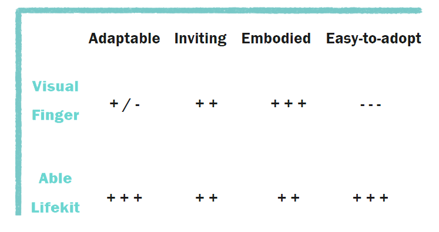
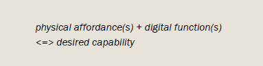
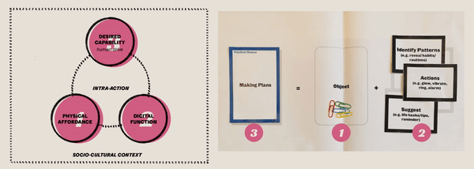

Thank you for dropping by on your phone! To ensure a better viewing experience, you
might need a
larger
screen (a.k.a. your desktop) to look at my protfolio.
In this project, I proposed a design strategy to close the
gap between needs emerging in the aging process and what
current mainstream gerontechnology provides.
We are all familiar with the phrase Aging society. Statistics also show that we’re living in
a world where more and more people are getting old. News, articles, or papers like these are all over
the place. Meanwhile, we also see a booming market of technology for older people (a.k.a.
gerontechnology). During my thesis, I explored the intersection of technology and aging to explore the
preferable future design guideline of gerontechnology.
My roles
Researcher
My role as a researcher is reflected in the application of qualitative research
methods (e.g., observation, interview, generative sessions, and interpretation of qualitative
data) and the generalization of the conceptual framework. This role requires me to extract
empirical from this process, interpret it into insights and translate them into generalizable
design knowledge (concept constructs).
Designer
My role as a designer is reflected in the crafting of the concept artifact which
embodies the conceptual framework. This role entails working conceptually to reify the abstract
theories and embody the design vision as well as working aesthetically to sketch out the
possible forms and defamiliarize the familiarity.
Facilitator
My role as a facilitator is mainly reflected in the generative and co-speculative
workshops I planned and facilitated and the weekly briefing meetings I organized. Specifically,
I undertook two types of activities. First, create the materials which are used in the workshops
to facilitate data collection. Second, be responsible for the progress of the project and report
to the supervisors periodically.
process
Explore-Orient-Design-(Future)
I mainly went through three phases in this project.
Starting with research into the notion of aging and the state-of-art of mainstream
gerontechnology. I sought to challenge the current common understanding of aging and identified the
pitfalls of mainstream gerontechnology up to date. This surfaced the first tension: the mismatch between the
needs of the aging process and what technology
provides. To address this tension, I proposed ‘design for openness’ as a potential design
strategy and
theorized an intra-action model.
Based on this model, I conducted co-speculation sessions with older participants which revealed the
potential risks of leaving design completely open, that is the second tension, the ineffective
appropriation caused by a misalignment between use and design.
To address the misalignment, I further explored by making a concept artifact. Evaluation of the artifact
offered rich design implications and drove the development of the intra-action model.
outcome
Go beyond design
Empirical finding
The mismatch between the needs in the aging process and what’s
provided by
current mainstream gerontechnology.
The literature research on the origin of today’s notion of aging indicates that
our common understanding of aging is far from an objective concept but heavily influenced by
early medical findings, problematized by societal and governmental administrations, and fixated
by cultural stereotypes. Three pitfalls were
summarized after analysis of current mainstream gerontechnology, which are ignorance of
aging people’s needs, misunderstanding of aging people’s needs credited to medicalized and
simplified view of aging, and over-emphasis on aging people’s needs distorted by the
problematized view of aging. Interviews conducted with older participants (N=5)
confirmed the findings from the literature research and generalized the characteristics of the aging process which is
developmental, multi-faceted, dynamic, complex, and personal. It is in sharp contrast
with mainstream gerontechnology which is rigid, over-medicalized, one-size-fits-all,
stigmatized, or tech-oriented. This boils down to
the mismatch between the needs in the aging process and what’s provided by current
mainstream gerontechnology.
the origin of notion of aging
3 pitfalls of current mainstream gerontechnology
the mismatch between the needs in the aging process and what’s provided by
current mainstream gerontechnology
Empirical finding
‘Design for openness’ as a design strategy
In recent years, the concept of performativity has influenced the design field.
The performative approach prompts a relational view toward the interaction between humans and
technological objects. The performative discourse later converges into several practical design
proposals that embrace and encourage the continuous co-constituting entanglement relationship
between humans and technological objects. This line focuses on concepts such as appropriation,
ambiguity in design, meta-design, end-user development, and so on. Inspired by those design theories, I proposed a
potential design strategy named ‘design for openness’ which can bring the advantages of
situatedness, dynamics, and autonomy.
Empirical finding
The potential risk of openness in design
Co-speculation sessions were conducted to experiment with how to implement
‘design for openness’ in practice. The findings
from the sessions revealed the potential risk of leaving the design completely open:
ineffective appropriation which includes inefficient use and failure of adoption.
After analysis, the root cause of ineffective appropriation was identified to be the
misalignment between design and use.
Concept Constructs
Magic Intra-action Model
Based on the study of related design theories following the strand of
performativity, I theorized a conceptual framework —- the magic intra-action model —- to ground
the intra-action process. The three components in the model, deriving from both the human side
(desired capabilities) and the thing side (physical affordances and digital functions), provide
firm design handles for practitioners.
Concept Constructs
Alternative design process
At the end of the exploration phase, I proposed an alternative design process
driven by association. It is a profound and promising direction that’s worth further research.
This design process is different from the traditional problem-solving design process. Though
there are still risks and limitations in this design process, it works well to break design
fixations and generate ideas for ludic design.
Concept Constructs
Concept Artifact
A concept artifact was conceptualized to embody the conceptual constructs.
During the exploration, the development of the concept artifact and the theoretical
framework ran in parallel and stimulated and complemented each other. Together with the
theoretical framework, the concept artifacts also consist of an important part of the research
results.
Because of the explorative essence of this project, I spent this phase defining the problem
space based on literature research and interviews with older people. The primary questions driving the
research in this phase were:
How to understand aging and aging needs? What do aging people need
to achieve successful aging-in-place?
How can technology support aging people in this process? What are the deficiencies and limitations
of current technologies?
literature research
What are we talking about when we talk about aging?
Let’s go back to the news/article clips in the beginning. We can see there is an obvious
negative narrative around aging. Why is it? With an urge to challenge this negative rhetoric, I decided
to look back into the origin of the notion. Based on the literature research, I came to the conclusion
that:
In the 19th century, early medical findings made doctors treat older
patients differently from younger ones because of their resistance to medical intervention.
This led to the medicalized view of aging
that equates aging with physical deterioration.
The advent of government programs including pensions, nursing homes, etc.
was indeed beneficial but also inevitably transformed the aging process from an individual
experience to a mass-scale problem to be solved. Besides, the institutional arrangements
would allocate people into the category of ‘old’ purely by age. This creates an illusion of a monolithic and
homogeneous group labeled as ‘the aged’.
The introduction of the fixed retirement age further strengthened the
equation between ‘being old’ and the chronological age. Besides, cultural expectations developed around age make
certain behaviors appropriate only at certain ages.
Origin of the notion
Today’s concept of old age is far from an objective concept but heavily
distorted by early medical findings, problematized by societal and governmental
administrations, and fixated by cultural stereotypes.
Desk research
How does the common understanding of aging influence today's technological
innovation for older people?
Knowing that the concept of old age is largely constructed, the question that drove my
research into the state-of-art of current technology for older people was:
Ignorance of aging people’s
needs.This is the result page I retrieved by Googling ‘technology for older
people’. What you can see here is a full page of screen-based products. We might ask: Is
this the best way of embedding technology in older people’s lives?
Google 'technology for older people' search result
Misunderstanding of aging
needs. If we search for some technological products for older people, not
surprisingly, we will end up with lots of products like - medicine reminders, bodily
sensors, telecare devices, personal emergency response systems, and so on. I’m not saying
they are not helpful. What I attempt to question is whether that’s all that older people
need. Additionally, another aspect of misunderstanding is the tendency to overlook the
diversity and dynamic of needs.
Take the pill dispenser as an example. Here is a comment I came across on a
recommendation website. The daughter who wrote this comment was desperate to find a pill
dispenser that suits her father’s prescription requirement, however, after going through
many recommendation websites, she ended up with nothing. This struck me that even in such a
single medicine-taking context, how diverse the needs can be.
Speaking of dynamic, I mean, there are many what-ifs. What if there’s a power outage? What
if you drop a pill in the sink? In the long term, the needs also might change. Oftentimes,
we tend to ignore the diversity and dynamics of needs.
Exaggeration of aging people’s
needs. How do you feel when you see these older people wearing a red emergency
button around their necks? Maybe
you have the same concern as mine and want to ask whether this is the best way to manifest
technology for older people.
An emergency SOS panic button alarm sends
a customed message that has the current location of the
person. (Access from https://seniorcaresingapore.com/
smart/sos/)
The second pitfall is the misunderstanding of needs which can be credited to the over-medicalized or
simplified view of aging.
The third pitfall is the exaggeration of aging people’s needs. which is heavily influenced by the
problematized view of aging,
Ignoring older people’s needs might lead to tech-centered, function-laden, and
disembodied
products. An over-medicalized view of aging leads to a partial understanding of aging needs.
Over-simplified view blinds us to the diversity and dynamic of needs thereby leading to
one-size-fits-all or rigidly prescribed solutions. Exaggeration of needs distorted by a problematized
view might result in stigmatized and paternalistic products.
Literature Research
New voice and Capability Approach
In the research on topics related to gerontechnology, to my relief, I also found some recent
new voices against the common (mis)conceptions of old age/aging. They serve as the inspiring ground for
me to build this project on.
The holistic approach promoted by the
successful aging model together with the personal uptake inspired by personhood turn in the care
model points out a promising direction to maneuver through misconceptions. Design projects
and cases that share a positive view of old age exemplify the manner of affirming, exploiting, and
promoting the potential and possibilities of old age. Emphasis on a contextualized understanding of lived
experiences serving as the input for technology design is another recurring theme among the projects
that can be assimilated.
Bearing the prompt of taking a holistic and
personal approach to understanding in mind and taking a positive viewpoint, we still need to go
through the hands-on exploration to glean first-hand insights. Therefore, the next question
would be how to truly understand older adults' life practically.
Capability Approach (CA) and
Capability Theory The capability approach (CA) pioneered by Martha Nussbaum
and
Amartya Sen, has become an influential framework for reflecting on justice, equality,
well-being, and development (Oosterlaken 2013, p.41). The difference between the capability
approach and capability theory should be noted here. As explained by Robeyns (2017, p.29),
the capability approach is an “open-ended and underspecified framework, which can be used
for multiple purposes” and there are various ways to “close” it. When the capability
approach is specified for a specific use, it is proposed to be called a capability theory.
CA and Well-being
Informed by the personhood turn described in the previous chapter, we see the importance of
taking a holistic approach while addressing the well-being of older people. However,
concepts like well-being or quality of life are never easy to define. Oosterlaken (2013)
proposes that human capabilities can be seen as the implicit or ‘missing link’ between more
comprehensive ideas of the good life and concrete technical artifacts. Therefore, the CA offers a proper way to assess
people’s well-being in terms of capabilities. Nussbaum’s capability theory provides a
concrete and substantive normative foundation (Jacobs 2020) for probing into older
people’s lived experiences and well-being.
CA is generally understood as a conceptual framework for a range of
normative exercises, including most prominent the following: (1) the assessment of
individual well-being; (2) the evaluation and assessment of social arrangements; and (3) the
design of policies and proposals about social change in society. (Robeyns, 2011)
CA and Technology
On understanding the relation between technological artifacts and human capabilities,
Oosterlaken (2013) posited that moving back and forth between ‘zooming in’ and ‘zooming out’
is required: while the former ‘allows us to see the specific features or design details of
technical artifacts’, the latter ‘allows us to see how exactly technical artifacts are
embedded in broader socio-technical networks and practices’. From the perspective of CA,
evaluation of the outcome brought by
technological artifacts can be done by examining whether the resulting expansion of
human capabilities is of intrinsic value, whether the outcome accommodates diverse
individuals, and whether the process leading to the outcome respects human
agency.
Take the pill dispenser as an example. Here is a comment I came across on a
recommendation website. The daughter who wrote this comment was desperate to find a pill
dispenser that suits her father’s prescription requirement, however, after going through
many recommendation websites, she ended up with nothing. This struck me that even in such a
single medicine-taking context, how diverse the needs can be.
Speaking of dynamic, I mean, there are many what-ifs. What if there’s a power outage? What
if you drop a pill in the sink? In the long term, the needs also might change. Oftentimes,
we tend to ignore the diversity and dynamics of needs.
In this project, Nussbaum’s capability theory is chosen as the core base of the
following research. Nussbaum (2006) made a list containing 10 central capabilities that every human
being should have to live with dignity. This theory threads through the whole project. In particular,
it provides a theoretical foundation to develop a
methodological path to probe into older people’s lives in a comprehensive way through
semi-structured interviews and constitutes an important part of analyzing the final evaluation
sessions.
Interview
What are the characteristics of the aging process and the needs of aging people?
Backed up by Nussbaum’s capability theory, I developed a probing toolkit to facilitate
interviews with older people. Five semi-structured interviews with the target group were conducted to
know their needs, challenges, and desires in daily life.
Participant Screening and Recruitment The
screening criteria were established on the age range and the ability to speak English. As
the author and researcher can only conduct the interview in English, the participants are
arrowed down to English-speaking aging people in the Netherlands. The recruitment process
was done by utilizing my personal network and a snowball sampling technique.
Procedure Opening
The participants were asked to read and sign the informed consent. After that, the
interviewer briefly introduced the background of the project and let the participant ask
questions they have before officially starting. The permission of recording was then
requested. First activity (Warm-up)
The participant was asked to describe what a typical day in his or her life looks like in
the form of a timeline. Second activity
The participant was provided with a set of cards with a topic and several guiding questions
revolving around that topic. There were twelve cards in total and they were presented to the
participant in three rounds (each round with four cards). The participant was asked to
choose the topic he or she feels like sharing and was not requested to cover all topics.
Only one additional topic related to technology (the black card) was a compulsory one, which
lets them share their feelings about the digital products they use currently. Third activity
The participant was shown a diagram of a human body, in which some common devices or
accessories related to different body parts were listed. A list of digital functions was
provided on another sheet of paper. The participant was asked to associate one or several
functions with the device or accessory that was most desired to be endowed with extra
functions, namely, to be ‘smartified’. Participants can choose more than one device and
share their thoughts on how they would like to use the ‘smartified’ devices (in what kind of
situation). Gift
In the end, the participant was given a self-printed postcard as a gift and was invited to
attend a follow-up session in the future.
Interview scripts
A set of cards were designed to
serve as a conversation starter. The topics of the cards were extracted from the
ten central capabilities in Nussbaum's capability theory. Nine capabilities including (1)
bodily health, (2) bodily integrity, (3) senses, imagination, and thoughts, (4) control over
one’s environment, (5) practical reason, (6) play, (7) affiliation, (8) emotion, and (9)
other species were selected to develop the topic cards. Life was intentionally excluded.
According to the definition by Nussbaum, life is the capability to live to the end of a
human life of normal length. It can be understood as the capability to exist in the world
until old, which is the prerequisite to make this interview happen so was left out of the
interview.
Though developing the card set was based on the capability theory, While the tangible materials were used, inquiry
questions were asked to gently guide the conversation and reveal the challenges,
desires, and needs. Notes on non-verbal communication were taken by the investigator during
the process.
Another material is a visualization of the human body to help the participants
better think of the potential devices and a list of digital functions introducing the
technologies that older people might not be familiar with.
Hybrid coding The recording of the interviews was
first
transcribed and then the investigator first obtained the initial codes by using a mix of
types of coding including deductive coding and inductive coding. The deductive coding
started with priori codes based on the nine selected central capabilities. The used ways of
inductive coding include in vivo coding, process coding (observations of non-verbal
communications), structural coding (based on demographic attributes including profession,
interests, etc.), and values coding.
The coding process consisted of initial coding to get familiar with the data and
line-by-line coding to dig deeper, refine the codes, and code as much as possible. Memos
were taken all the way along the coding process to extract meaning from the data, document
the coder’s emerging thoughts and doubts, and open later discussions (Birks, Chapman, &
Francis, 2008).
The outcome of the previous coding process is a map of codes. The transition
from the data to themes was completed by clustering the initial codes obtained from the
previous step and analyzing them with extended themes that categorize the data. The analysis
methods used here are thematic analysis, frequency, and discourse analysis. The identified
six themes were listed below.
Clusters of codes
Personal traits
This cluster includes all traits that can describe the participant as
a holistic and vivid person like the profession, hobbies and interests, typical
quotes, personal stories, and personalities extrapolated by the investigator.
Topics and lived experiences
This cluster includes the life stories, needs, values, and challenges
explicitly or implicitly stated by the participants.
Attitudes toward technology
This cluster collects the different attitudes explicitly or
implicitly expressed by the participants and is classified into three categories:
avoid/arguable/promote.
Factors on the adoption of technology
This cluster focuses on the factors that might influence the adoption
of certain technology.
Thoughts on aging
This cluster illustrates the participants’ thoughts on aging which
also shed some light on their values.
Mentioned scenarios
This special cluster is formed by all the scenarios, no matter
imaginary or real, mentioned by the participants which also implicitly reveal what
the participants are concerned with.
Vignette writing
To avoid losing the richness of
the raw data, the cluster of lived experiences formed in the previous step
combined with participants’ values and mentioned scenarios were revisited carefully to create three vignettes that represent small
scenes that illustrate and support summary assertions (Graue & Walsh, 1998). These
vignettes also serve as inspirations for initial concepts.
Not only care about health but also thoughts and relations
According to the frequency of codes in the second cluster, the most frequently
mentioned
capabilities are bodily health, senses imagination and thoughts, emotion, and affiliation.
See below for
the detailed sub-topics.
Frequent topics
Attitudes toward different product features
The classified attitudes toward certain product features mentioned by the
participants
were shown below.
Attitudes
Vignettes
After integrating all findings from previous research, I attempted to bust the
common misconceptions around aging by reconceptualizing it.
Aging does not happen overnight
All participants were recruited based on one demographic
characteristic they
have in common - age over 65 years old. However, after conducting the interviews, I
found that age is the least important label on them. Maybe I shouldn’t be surprised
because they are different individuals after all. Accordingly, this indicates that every
older person age differently. The frequency analysis from the thematic analysis might
reveal the topics of most concern, but the richness lies in the differences, and the
uniqueness of every person’s life shouldn’t be ignored.
Aging is complex and deeply persona
All participants were recruited based on one demographic characteristic they
have in common - age over 65 years old. However, after conducting the interviews, I found
that age is the least important label on them. Maybe I shouldn’t be surprised because they
are different individuals after all. Accordingly, this indicates that every older person age
differently. The frequency analysis from the thematic analysis might reveal the topics of
most concern, but the richness lies in the differences, and the uniqueness of every person’s
life shouldn’t be ignored.
Attitudes towards aging are different.
I was not only deeply impressed by their colorful life
experiences, but also by the positive attitudes they exhibited during conversations.
Many of the participants showed a great capability of adapting to the shrinkage of
certain capabilities, for instance, the declining physical conditions, by focusing on
what they still can do. The well-being paradox, where older persons experience high
levels of well-being regardless of age-related declines, confirms that physical frailty
does not definitely negatively influence the perceived quality of life while
psychological factors contribute most (Vanleerberghe et al., 2019). This also indicates
that despite a similar process of physical declination, the attitudes towards it might
vary from person to person.
Our society abounds with misconceptions about aging at odds with reality. This,
in turn, opens up the opportunity space for designers to rethink the notion of aging to
better design technological systems. The
nuanced dynamics, diversity, and complexity of aging should be taken into account and
the focus should not only be on the deficits but also on the capability of older
people.
Probing Toolkit The probing toolkit designed
by the investigator worked well to engage the participants and make the interview more
dynamic and interesting. The abstraction of
the topics extracted from the capability theory
was concretized by the guiding questions. The freedom of choosing the topics to
talk about
alleviated the pressure of sharing personal life. Overall, the card set served as a good
conversation starter to obtain a comprehensive understanding of the life of the
participants.
The human body diagram and the function list worked well to generate interest and stimulate
the imagination of the participants. Many of the participants actively speculated on the
possible products in the future by associating the function and the device.
Data Analysis Methods The investigator
deliberately chose the methods of analysis to identify patterns as well as extract the
richness of lived experiences. Therefore, hybrid coding methods were used. Furthermore,
besides using the usual methods of thematic analysis by clustering to surface patterns,
nuances in the data were kept in the vignette writing. The general insights gleaned from the
interviews were documented as the result of a holistic analysis. The combination of
different methods in analysis contributes to remaining the richness of data and serves
as a
solid step toward the framing phase.
Limitation of Sampling The main limitation of
this study was the language. As the interviews
can only be conducted in English, this might
already filter out a certain part of the target group. For example, the Dutch
participants
must be literate enough to speak English which means aging people who are not that literate
might not be represented by this sample. And the expression of the participants might be
limited by using a language that’s not their mother tongue. Besides, the recruiting of the
participants was through a personal network and two out of five participants work in the
creative industry and are still actively working, which might not be congruent with the
usual situations of retirement.
define
Bridge the gap between the real aging process and the state-of-art of
gerontechnology
On the one hand, the literature research and empirical studies indicate that aging is a multi-faceted, dynamic, and deeply personal
process. On the other hand, the current design of gerontechnology is prone to myths about aging at
odds with reality which might lead to three types of pitfalls. This gap in-between calls for
a reconceptualization of old age and a paradigm shift in the design focus of gerontechnology. This poses new challenges as well as opens up the
opportunity space for designers to tap into the potential of technology based on a holistic
understanding of older people’s real needs.
How to design a product-service system (PSS) that can be effectively appropriated by older
people in varied ways tailored to personal daily needs？
The overarching goal of this project is to overturn the dominant but problematic rhetoric
around technology for older people. The starting point for this is to reconceptualize the notion of
aging to reflect the rich lived experiences and to design for the personal and dynamic aging process.
According to the research results so far, the envisioned
design features can be summarized as situated, empowering, and adaptable.
To avoid casting the shadow of stigma on technology for older people, the design should be
carefully positioned and branded to advocate autonomy thereby enhancing older people’s self-efficacy and
empowering them. To make sure the design won’t go to another extreme of ignoring older people’s needs,
the design should be established upon the daily practices of older people. To answer the various
personal needs emerging along with different individuals’ aging process, the design needs to be able to
be adapted or repurposed accordingly.
ideation
Shaping of the design space
The definition of the design goal and the envisioned design features roughly carve out the
desired solution space. Two initial concepts were loosely explored before settling on the direction of
design for openness.
Concept 1: visual finger
Visual finger (together
with a virtual system) is a customized trigger-output system based on the logic
of if-this-then-that (IFTTT).
The whole system is based on an if-this-then-that (IFTTT) rule. The tangible part of
this PSS provides the pre-set gestures or passively sensed information as the input.
The tangible product in this concept is an artificial limb - one extra finger that
can be worn like a ring. The simulated biological form is intended to trigger a
natural association of use like a finger. The movements or gestures could therefore
be captured and recorded. The actively created gestures (e.g. tapping a surface)
will be put in a library and serves as a set of triggers for certain functions.
Embedded sensors - a micro camera - work as a life recorder and can be reconfigured
as the input of certain functions. All data can be transmitted to a smart device
installed with the application. Basic motor components - a vibrator and an LED - are
integrated to provide visual and haptic feedback when certain triggers are met.
Reflection 1
Manifesting as an organic form, the visual finger serves as a fingery eye that can augment
and extend users’ perceptions thereby augmenting certain capabilities. It can do almost
anything you can imagine a finger can do like poking, pressing, tapping, etc. As the number of gestures with fingers is
enormous, it is highly customized and flexible which abounds with opportunities to
configure. However, the customization process can be rather complicated to learn which
increases the difficulty of use. Besides, though it provides the opportunity to
create a personalized library of gestures, it can be a formidable task to remember all of
them accurately, which accordingly increases the memory burden. Besides, the configuration of the rules heavily relies on
extra devices like the smartphone, which to some extent restrict the exploration of the
visual finger if not configured properly. That being said, once the configuration
has been done, the visual finger is still competent to work as a powerful product.
Concept 2: Able Lifekit
The Able Lifekit is a
hub of smart objects that take the form of ordinary everyday objects, for
instance, clamps, hooks, pins, etc.
Those objects are already highly dispersed in everyday life. The familiar form they
have can easily inform the users of the potential way of use. The physical
affordances provide the critical clues required for its proper operation. For
example, to hang with a hook because it’s hang-able, to clamp with a clamp because
it’s clamp-able, etc. In this sense, it’s quite directional. But on the other hand,
they are still open to reinterpretations because they can be associated with
different objects and used in different contexts. For example, the hook can be used
to hang a coat as well as a chain of keys. Digital functions - which are
extra-ordinary to the original objects - like glowing, alarming, vibrating, timing,
and sending signals can be embedded to make them smart.
Reflection 2
Taking the form of everyday objects, the Able Lifekit is easy to adopt at the first glance.
As many everyday objects are used in various daily activities, the extra-ordinary
functionalities can be triggered to use in different contexts. This kit therefore naturally fits the
context. While each one of the products in the kit can function separately, the
interconnectivity among those products enables possible use in combination. The downside of this concept is that the
familiar form of the thing - not an object anymore because it is embedded in a network -
risks being so directional that it obstructs the exploration of ‘unusual’ ways of
use.

the comparison of two concepts
Overall, the second concept outweighed the first one and was chosen to be the
foundational concept for further development. Most noteworthy in the second concept is the
use of existent everyday objects like clamps, magnets, etc. that are familiar to people.
The physical affordances can be the ‘primer’
to triggering natural early-stage use and guiding the exploration of digital functions.
This provides a potential way to steer the process of exploration.
design direction
Design for openness
Explorations around design features led me to the direction of ‘design for openness’. Design
for openness is a design approach that draws upon various design theories or frameworks including
appropriation, open to interpretation, ambiguity in design, meta-design, and so on. Actually, there are
many similar other theories or paradigms that have inspired this project including non-finito products
(Seok et al., 2014), bricolage (Lanzara, 1999), and so on. Due to the limited space, I won’t elaborate
on all of them but mainly focus on the following four.
Ambiguity in Design (Gaver et al., 2003):
instead of viewing ambiguity as anathema in Human-Computer
Interaction, Gaver et al. promoted ambiguity as a resource for design to encourage
close personal engagement with systems.
End-user development (EUD) (Lieberman et al., 2006)
a paradigm that emphasizes systems' capacity to provide support
throughout application development, obfuscating the line between design time and run
time.
Appropriation (Dix, 2007)
i.e., the process through which users interpret and apply technology
in their own ways, potentially going against the intentions of the designers.
Meta-design (Fischer and Giaccardi, 2006)
also known as ‘design for designers’, is a design paradigm that
enables different stakeholders, including end users, to act as (co-)designers even
during use time, blurring the distinction between designers and users.
The related theories promote various ways of use and embrace uncertainty in
design. Three advantages are brought by the openness in design.
First, situatedness – each use case is
uniquely
constructed in a certain situation.
Second, dynamics – the openness of use
purposes offers
the potential to satiate changing needs over time.
Third, autonomy – the purpose of use is
decided by
users. This provides a feeling of control thereby enhancing autonomy.
framework
Magic Intra-action Model
The openness in design can also be characterized by the relation between the human and the
thing. Design for openness aligns with a perspective that
views the human and the thing as one unit and the boundary in-between is co-constituted through
sense-making or enacting process within the socio-cultural context. Karen Barad, a physicist
and feminist philosopher, named this co-constituting process intra-action.
Magic: driven by daily practices
Any sufficiently advanced technology is indistinguishable from magic. ——
Arthur C. Clarke
What makes ordinary objects magical? David L. Rose (2014) at MIT Media Lab
coined the word enchanted objects in his book Enchanted objects: Design, human desire, and
the Internet of things. Disappointed by the fact that so many products are ‘difficult to
understand, frustrating to use, overwrought with features’, he attempted to ‘develop
products that are engaging and essential, resonating with the latent needs of those who use
them, and that creates an emotional connection with us human beings. Along this line, magic can be understood as the
product's ability to answer humans’ fundamental drives and bring an engaging experience
perfectly. In this project, we use Nussbaum’s capability theory to define the
magic effect, which is the augmentation of a certain capability. Hence, the word magic lays stress on the fulfillment of
persistent human needs and desires - magic emerges when the needs and artifacts are
perfectly matched.
Intra-action: continuously configure and reconfigure
Drawing upon the Baradian
theories (Karen Barad 2007), I borrowed the term intra-action to describe the
continuous process of co-constitution between humans and machines. It is
different from interaction by defining the primary ontological unit of reality as phenomena
that include both people and things. The term intra-action strikes the bidirectional nature
- it is not only us shaping smart things but also being shaped by them as well.
As Frauenberger (2021) pointed out, 'Taking a relational ontology perspective offers to
describe our relationships with smart things as a process of defining and continuously
redefining us and the smart thing through our intra-action. This reorientates designing
smart things from the magic-like tool towards an actor with intent that needs to be open to
negotiate its relationship in a wider network of use.'
Acknowledging the continuously shifting boundaries between humans and their smart things,
how to craft the magic intra-action would be the next question. I attempted to identify the ‘magic
potion’ ingredients. They serve as design handles in order to ground and craft the magic intra-action.
They are human drives, physical affordances, and digital functions.
How the concept of intra-action informs the theoretical idea
Desired Capability (Human Drive)
According to Robeyns (2012), a narrow
usage of CA
(capability approach)
could be providing a proper conceptualization of individual well-being, namely in terms of the
capabilities that a person has. Hence, the Within this project, the human drive is the
fundamental need and desire stemming from daily life. They can be expressed from the capability
approach perspective, as what capabilities are needed to strengthen.
Digital Function
The digital function is the crucial
component to
fulfilling the human
drive. Its characteristics largely decide how much it can adapt to different situations.
Figure 38 shows the three main elements in the process of intra-action. It is a seed of the
theoretical idea that later helped structure the co-speculation sessions
Physical Affordance
The word affordance was first coined by
Gibson
(1979), who defined it as
that ‘what it offers the animal, what it provides or furnishes, either for good or ill’. They
are actionable properties.
I translated this model into a formula I used in co-speculation sessions with older
people to experiment with how to implement ‘design for openness’ in practice.

It was assumed that the desired interaction
(intra-action) happening over time is instigated in a bidirectional way: (1) The set of
physical affordances and digital functions might lead to a list of human capabilities where the artifact
can strengthen; (2) The need or desire for strengthening certain capabilities in daily life might, in
turn, trigger the appropriation of certain physical affordances or digital functions. In this way, the
interaction (intra-action) between the smart thing and the person is enriched over time.
workshop
Co-speculate with the older people
The co-speculative sessions conducted with aging participants aim to validate the
intermediate knowledge obtained from previous research activities and gain new knowledge to inform the
following design process. The primary questions that guided the development of the setup of
co-speculation sessions were:
Physical affordance
Whether the provided materials are able to elicit certain bodily movements and
how?
Digital function
Whether the participants are able to spontaneously associate certain digital
functions with the objects primed by bodily movements?
Desired capability
Whether the participants are able to recall their needs and desire to imagine the
use scenarios of the objects with extra digital functions?
Participant Screening and Recruitment Four out
of five participants who have been interviewed about one month before. They all have been
invited to the session at the end of the last interview and four of them were able to attend
while Emily was away on vacation so not being able to do so. The first interview provided a
good opportunity to get to know the participants personally and laid the foundation for this
session.
Procedure The co-speculation session was
conducted one-on-one at the same place as where the interview did: three were in the
participants’ places and one was at the cafe. Table 4 showed detailed information about the
sessions. The sessions lasted about 90 minutes. Opening
The participants were asked to give permission for audio recording. After that, the
facilitator briefly introduced the main activities of the session and let the participant
ask questions they have before officially starting. First activity (Warm-up)
The session started with a five-minute-body scan guided by pre-recorded voice guidance on
Calm. Calm is a popular application for meditation and sleep. The body scan was aimed at
tuning into the body—to reconnect to the physical self—and notice any sensations you're
feeling without judgment. Second activity
The participants were asked to play with provided objects freely. To encourage them to
interact with the objects through the body, two heuristic questions were asked: (1) Can you
wear/put it on different parts of your body? (2) How can you interact with it? Participants
were encouraged to think of natural ways of embodied interactions and then come up with
unfamiliar ways. Third activity
After exploring the objects for a while, the participants were introduced to a set of
digital functions by the facilitator. Given that most aging people might not be familiar
with digital functions, the functions were briefly explained. They serve as the inspiration
pool that the participant could use for the later association.
The participants were asked to think of some activities they valued in their life. Activity
cards created by the investigator were provided as inspirations. Starting with unpacking the
sequential scenes in the activity, the participants were prompted to think of how to
associate certain functions with the provided objects to support the activity. The
speculation ended with the enactment of the scenario with the object. Two to three rounds of
speculation were conducted until the end of the session. Ending
The sessions were closed with appreciation expressed by the investigator. Further questions
from the participants were answered after finishing.
Interview scripts
Object Stimuli Several daily used objects were
provided. They were elastic bands, belts, rings, lenses, magnets, ropes, gloves, stickers,
beads, and clips. Some extra materials were also provided in the pilot session to see the
participant’s responses.
Facilitating cards Accompanied by the objects,
the following materials were used to guide and stimulate the imagination. (a) Magic intra-action formula canva It was created based on the
assumption mentioned before. What’s worth noting, the original terms (desired
capability, physical affordance, digital function) were deliberately replaced by words
(activity, object, function) that can be easily understood by the participant. This
canvas served as an overview of the whole session and was shown to the participant in
the beginning. (b) Digital function card set It was an unexhausted list of digital
functions brainstormed by the investigator. There are 48 cards in total. (c) Activity card set It was a set of activities created based on
the result of the previous interview. The most frequently mentioned topics were included
to develop the related activities. There are 12 cards on 4 topics. (d) Instruction cards The most important instructions for each
activity were printed out on the cards to make it easier for the participants to
follow. (e) Facilitator's scripts
Facilitating cards (a) Magic intra-action formula canvas in A3
(b) Digital function card set
(c) Activity card set
(d) Instruction cards
(e) Facilitator’s sheet.
Materials in use

How to implement 'design for openness' in practice
Along with the materials for stimulation, participants were encouraged to
think out loud throughout the whole process and were assured that there was no right or
wrong in what they said thereby ensuring their freedom to imagine. The facilitator might
give necessary guidance or intervention when the participants got stuck or deviated from
the instruction. Extra photos were taken during the process when necessary.
Figurative associations are easier to elicit than bodily movements.
It was noticed that when asked to play with the provided objects and explore
with their bodies, the participants were difficult to quickly think of different bodily
movements. That meant the objects were only able to elicit limited bodily movements. One
reason might be that the most intuitive and natural bodily movements elicited by the object
are limited (e.g. Stretch the elastic band, Thread through the beads). When encouraged to
explore unfamiliar ways of interaction, some participants might even feel awkward.
This means that It is not an inborn ability to generate rich body language. We
can also say everybody has different levels of somaesthetic literacy. Professional dancers
probably have a larger bodily vocabulary than average people, let alone aging people who
might face a decline in motor skills.
Though the elicitation of bodily
movements is harder than expected, another type of association was quite remarkable,
which is the association of doings including related practices and situated
actions. Another noteworthy type of association was attaching cultural or
metaphoric meanings to the object. For example, Anna associated the sticker sticking beneath
the desk legs or chair legs to prevent scratching with the environmental orderliness and
inner tranquility. Robert associated the lens with observation and discovery.
Objects and corresponding associations
ImplicationTapping into the broader range of
doings instead of imposing unnatural bodily movements as the trigger.
The pairing of functionalities and objects is difficult.
After the participants were introduced to the functions, activity cards were
provided. The task to associate certain digital functions with the provided objects they
previously explored was quite difficult. The effect of the first exploring activity being
used as the input to pair objects with functions was limited. This implied that drawing connections between
the physical affordances and digital functions do not make much sense. One
possible reason is that when requested to pair the object and the digital functions from
scratch, too many options lead to difficulty in meaningful pairing. This also indicated that
the DIY rule configuration in the first concept does not suit them - the operation is too
complex to use.
Implication Design professionals should decide
the pairing functionalities with the objects instead of leaving them open to the user.
Not all needs or desires can be enumerated purely in the mind.
When asked to imagine what they
needed to support the activities they valued, many participants got stuck. One possible
reason is that the overwhelming information was hard to process. Besides, more importantly, this implies that
the emergence of needs takes time. Because of the limited time of the
session, the whole session is arranged to simulate the process of appropriating
ambiguous objects in everyday settings instead of the real one. However, it’s apparently
hard to condense the process which might take weeks or even months into a 90-minute
session. Creative use of ambiguous objects can only be triggered by genuine needs or
being revealed to serendipitous functions.
ImplicationParticipants need to be continuously
guided and provoked by reliving the experience and activities to complete enactment.
Probing Toolkit The co-speculation sessions
with older people were not plain sailing. The different personalities of older people make
the facilitation of each session a new adventure. For example, some participants are more
talkative and diverging and necessary interventions are needed to steer the direction of
diverging. Some participants are more thoughtful and better at abstract thinking, some
guidance toward concretized speculation is needed. Overall, it was a great pleasure to
co-speculate and discuss with a variety of people. The discussion sometimes went
surprisingly deeper than expected. The outcome
of the sessions was full of surprises and effectively exposed the blind spots the
investigator had. Besides, topics on autonomy and agency, chronological evolution of
use, technology-utopian, etc. were touched upon during the sessions, which were quite
inspiring and brought much intellectual pleasure. One recurring pattern in the sessions with the
older people was that they would be positive about the value of gerontechnology, but
then hurry to add that they themselves would not need something like that yet (i.e. it
was useful for other older people, with more health issues). This might be partly
true in this case, because many of the participants are in good condition. But sometimes, it
might be that participants don’t feel comfortable talking about their own issues openly.
This can be an obstacle in co-speculation if they were asked to ideate solutions for
themselves. Hence, situated elderliness was
used to detach the participants from their own experiences. Activity cards were used as
provided situations that are not necessary to be their own experience. In this
way, participants will have no scruple to brainstorm and co-speculate.
insight
The Risk of Design for Openness
The sessions indeed generated many interesting speculations shown above, the difficulty
encountered during the speculation process indicated that the configuration of physical affordances and digital
functions is arbitrary and complex. This revealed the potential risk of leaving the design
completely open.
Ineffective Appropriation
The cause of ineffective appropriation is
rooted in the misalignment between design and use. That means the actual use of the design is
different from the designers' expectations.
Misalignment of design and use
But wait, isn't the whole point of design for openness to encourage and accommodate the
possible different ways of use? Now, why should we be concerned about the actual ways of use being
different from what's expected?
Indeed, the core of design for openness is to
leave the design open to various ways of use. However, what I proposed to avoid here is ineffective ways of use
which includes inefficient use or failure of adoption.
Inefficient Use
For example, of course, you can use a piece of paper to cut things by using the
sharp edge, but it's far from efficient ways of use like folding it into a container to collect
paper clips.
Failure of Adoption
For example, a piece of broken glass can be made into various products including
glasses, magnifiers, camera lenses, etc., but it’s too raw a material to be easily appropriated.
Similarly, the separate physical affordances and digital functions might be too primitive to be
quickly combined and appropriated.
The more open the design is, the more raw or primitive it will be, and there will be more
possible ways of use but the higher the threshold of use will be.
Therefore, instead of leaving the design completely open, openness should be carefully
calibrated to improve use effectiveness and efficiency. So, how might we lower the misalignment?
New findings stemming from the co-speculation sessions are synthesized to navigate the
design direction. Accordingly, the elaborated design requirements are formulated to inform the next step
of conceptualization.
Situated
- The designed artifact should resemble an ordinary everyday object that
older people use frequently in their daily life.
- The appearance of the designed artifact should effectively elicit the associated meanings
inherent in physicality or conventions rooted in their lived experience.
- The designed artifact should easily and naturally fit into older people’s lives.
Adaptable
- The designed artifact should resemble an ordinary everyday object that
older people use frequently in their daily life.
- The appearance of the designed artifact should effectively elicit the associated meanings
inherent in physicality or conventions rooted in their lived experience.
- The designed artifact should easily and naturally fit into older people’s lives.
Empowering
- The appearance of the designed artifact should be non-stigmatized.
- The aesthetic of the design should elicit a strong willingness to adopt and explore.
concept artifact
How might we lower the misalignment between design and use to improve the efficiency
and effectiveness of use but still maintain the openness in design?
In my attempt to answer this, I crafted a concept artifact. Based on the first
finding from the co-speculation sessions, I decided to
tap into the rich meaning
associated with ordinary everyday objects to lower the threshold of use.
In the adoption phase, the familiarity of the object can evoke their past experience to
provide an easy entry point of use and encourage them to explore the digital functions.
Adoption phase
In the post adoption (appropriation) phase, the users gradually become familiar with the digital
functions and begin to put the object in different use scenarios triggered by their daily
situations thereby developing their own ways of use.
Adoption phase
In this project, I chose the clamp to
embody my concept, as it already showed rich
associations during previous sessions. Based on the associations being made in the
sessions, I
decided to add a timing function to the clamp.
Design process
Hack a clamp
In 1853 David M. Smith of Springfield, Vermont invented a clothespin with two prongs connected
by a fulcrum, plus a spring.
the clothespin
invented by David
Common clamp types
I first explore the structure of clamps and identified that though there are many
variations of clamps, they all share two essential elements: a wedge-shaped space between two prongs
and resistance force provided by either spring or other materials. Variations of clamps can be
classified by whether the two prongs are parallel and the direction of the resistance force. I
finally chose type 1 as the final structure to develop the concept artifact.
The application on the phone can control the clamps remotely. To be more specific, the
application on the phone can switch on/off the clamp and control the light and sound of the clamp
remotely. Besides, users can also find a specific clamp by using the AR Find function on the
application.
Common clamp types
Evaluation
The final design is deemed as a concept artifact that embodies the theoretical framework.
It is aimed at eliciting intrinsic responses and provoking thoughts. The evaluation is aimed to check whether or not the design
could lead to various ways of use and whether or not the resulting expansion of capabilities
is of intrinsic value.
Participant Screening and Recruitment Four
participants who attended the second round of sessions were invited to this last round of
sessions. For a design that has been intentionally made open to various interpretations and
purposes of use, it is important to gather and incorporate a variety of assessments from a
diverse population of interpreters, allowing outsiders to get a rich and layered view of how
the system is used, the roles it plays, and the cultural implications it suggests (Sengers &
Gaver, 2006). Hence, four young designers were invited as external evaluators to provide a
more objective viewpoint. The demographics of the newly recruited participants were listed
in the chart below. All names have been changed for privacy considerations.
Procedure Activity 1
First, three still images were shown to the participant, and he/she was asked to express
his/her feelings or preferences towards each style. Then the participants were asked to make
associations or wild guesses about the object they see based on their own assumptions. Activity 2
A demo video demonstrating how the object works were played for the participant. Then the
participant was asked to explain how the object works according to their understanding. The
misunderstanding was corrected if there was any. Then the participants were prompted to talk
about how it might be used to support them by describing different situations coming into
their minds. Activity 3
Interfaces of the application connected with the object were presented and introduced to the
participant. Questions about the functions were clarified if there were any. Then the
participants were prompted to think of new situations of use. Closing
After showing all features, the participants were encouraged to share concerns or extra
thoughts and feelings about the design.
Evaluation process for older participants
Evaluation process for professional designers
To achieve the third aim of
evaluation mentioned before, two slightly different evaluation processes were set up for
older participants and designers. What’s worth noting is that the older
participants who have been involved in this project from the beginning were informed about
the project background while the four designers knew nothing about this project in the
beginning. It is only after demonstrating all
features of the design, the context of the project was introduced to the
designer. This is the main difference between the two set-ups. Dynamic feedback (Sengers et al., 2005), a
strategy in which collected information was used to provide a stimulus for reflection,
was used here as an approach to figuring out what values are unconsciously built into
the design and what are their effects. Many interesting insights came out of this
stage.
Finding
The artifact indeed can accommodate various ways of use in different situations
and have the potential to strengthen different capabilities.
First, I classified the mentioned use scenarios by the theme of capabilities in
Nussbaum’s list. I labeled the source of quotes in different colors – the ones from older
participants are in red and the designers in black. The result showed that the artifact indeed can
accommodate various ways of use in different situations and have the potential to strengthen
different capabilities. Besides, in most categories, the use scenarios are evenly
from older participants and designers except that ‘senses, imagination, and thoughts’ and ‘play’
were only mentioned by designers.
If we zoom in and view it at the individual level, we can see that the specific use scenario
mentioned by individuals is highly related to their personal lived experience.
Finding
The associated meaning elicited by the everyday object is enough to hint at
possible ways of use.
I clustered and structured participants’ quotes in the three-layer bull’s eye
diagram. In the center are the original associations elicited by the clamp. The use scenarios
related to the original associations are on the second layer near the association. The values
behind the use scenarios are extrapolated and put in the outer layer. This diagram clearly showed how the original
associations elicited by the object can trigger the natural envisaging of different ways of
use and how different values can be realized. This confirms that the associated
meaning elicited by the everyday object (in this case, the clamp) is enough to hint at possible
ways of use.
Design Protocols
Getting the ingredients complete is far from
cooking a good meal and so is crafting magic intra-action. We still need to get the correct recipe
to make magic happen. We already identified the key elements we can use as design handles.
The tensions among the elements also should be addressed. Here are the design protocols embodied in the
concept artifact to lower the misalignment between the perspective of use and the perspective of design
while remaining the design open to a variety of use.
Protocol 1
Directional Physical Affordances
Making deliberate decisions on creating users’ mental representation which is
composed of high-level object properties (Lebrecht et al., 2012) and how to effectively design
the intended mental representation. Familiarity is the key to guiding the intra-action process
and lowering the misalignment.
This protocol can be translated into the design question as follows:
How can people sense and respond to it? How can it be heuristic in what
way?
Protocol 2
Adaptable Digital Functions
To remain the variety in use so as to adapt to different human drives, the
purposes
of use enabled by digital functions should be open. This requires mindful decisions on adding
digital functions. The adaptability of functions
is
the key to maintaining openness in design.
How to achieve the appropriate level of
adaptability is also crucial. The functions should be located at the middle level according
to
Don Norman’s (1986) ladder of functions.
High-level functions are too specialized and already closely matched to the task. For instance, the
spelling
checker is powerful and well-matched to its purpose but of little aid outside its domain. Low-level
functions are highly configurable and customizable but too primitive to be easily adopted. For example,
If
This Then That (IFTTT) proves to be a versatile tool to realize many goals but it requires prerequisite
knowledge to work with that not everybody has. The
middle-level functions are adaptable enough to
accommodate different needs but also easy to adopt. This is important to maintain openness
while
avoiding
ineffective appropriation in design. It’s always easier to say than do though.
This protocol can be translated into the design question as follows:
By adding this function, what is closed and what keeps open? Can people easily
use
the function for various purposes?
Protocol 3
Meaningful Combination
Try to put the affordance-function pair in daily contexts to see whether it is a
reasonable combination. It requires continuous inspection of the aspects that are open. While
providing the heuristic/directional cues, designers should keep on checking what possibilities
have
been excluded and what remains open. Do NOT keep
both
physical affordance and digital functions open. This protocol is crucial to striking the
right
degree of openness and avoiding ineffective appropriation.
This protocol can be translated into the design question as follows:
Does the pairing of physical affordances and digital functions make
sense? Are
there any obstacles that might hinder the adoption process?
Renewed Theoretical Framework
Beyond Physical Affordances
From the observation in the sessions, we could see responses elicited by the provided
objects include not only bodily reactions but also figurative associations. These associations including
how people sense and respond to a certain object can be influenced by various factors, which consist of
not only physical affordances but also other factors like aesthetic styles, past experience, etc.
For example, many participants associated the pin with documents and paperwork, which
denotes the related social practices imprinted on common everyday objects can be quite strong and common
among different people. This indicates the universality of
high-level properties and how people react to certain factors can be quite similar. This leads to an
expansion of the original component (physical affordances) to high-level properties. In this
sense, it is suggested that designers should pay more attention to the associations people usually draw
or other responses people usually have thereby moving one step closer to the use perspective.
Beyond Physical Affordances
With the expansion of physical affordances, I
found that the relation between the two originally separate components (physical affordances and
digital functions) is no longer separate but intertwined. Because during the long course of use, the
digital functions can be internalized as part of the high-level properties. For example, when
people are familiar with the timing property of the oven, they can also jump out of the most closely
associated use scenarios like cooking but use it to time for anything they want. This is also crucial to
inventing extraordinary ways of use. Therefore, the task
for designers boils down to distributing the percentage of familiarity and unfamiliarity.
This suggests a changing model in different
stages of use. In the adoption phase, the familiarity is mostly provided by the physical
properties and the unfamiliarity is from the abstract digital functions. Over the course of use, the digital functions will become
more and more familiar to users and be internalized as part of the high-level properties and the two
original components will draw closer and begin to merge. This is a dynamic process of the
post-adoption phase.
Conversion Factors
The third component in the model —- desired capabilities —- can be seen as the final outcome
of the tension between the familiar part and the unfamiliar part. The overlapping area which the
familiar and the unfamiliar direct toward can be represented by what capabilities can be achieved.
Besides, in order to truly transform the assets provided by the technological objects into capabilities,
the conversion factors should be taken into account. This
prompts the design that reflects respect for human skills at various levels including motor-sensory
skills, cognitive skills, social skills, and so on.
Alternative Design Process
The following design process is an attempt to provide a systematic design guideline to
strategically steer the process of design for openness. The biggest difference between this design
process and the traditional one is the focal point. Usually,
the design process starts from one or several
pre-defined tasks or goals to be achieved by the users and the whole process is centered around
helping users to complete their tasks or achieve their goals. However, in the alternative design
process, the starting point is the meaningful associations established between humans and the
properties of objects.
Since the design process aims at creating a
purposefully purposeless design, the risk of losing meaningful purposes of use should be kept in
mind. How to decide what digital functions should be added? How to make sure the combination
makes sense to users? Besides, we should also be wary of
‘overdesign’ by using this strategy. Is it necessary to add digital functions? How much added
value is created?
Additionally, identifying the boundary of the use scope
ensures the appropriate use of any design strategy. Apparently, openness in design is not
suitable in the context where the problem to be solved or the task to be achieved is clearly defined.
Instead of putting the efficiency of getting things done in the first place, design for openness prompts
a playful way to engage humans. It works well in the
following design contexts: (1) to overturn implicit stereotypes; (2) to break design fixation; (3)
ludic design (Gaver et al., 2003).
If I had more time ...
More evaluations conducted in the real life should be conducted. For
now, the evaluation of the concept artifact was conducted in vitro instead of in vivo due to the limited
time and the lack of technology support. In the ideal situation, the evaluation should be done with
workable prototypes and users should experience the whole process from adoption to post-adoption. The long-term observation of the spontaneous developing
process during which users generate different ways of use in their daily lives will definitely bring
more insights into the use of the design strategy in the real life.
A double-blind experiment can be done with professional designers to evaluate the
effectiveness of the design strategy. For now, how effective the design strategy can
break design stereotypes or design fixation remains unclear. Third, the proposed alternative design
process presents a way to move beyond the traditional design process. Current design practice mainly
focuses on things like usability and user satisfaction.
Shifting the focus of design from problem-solving to human responses opens up an exciting
opportunity space for the future development of the design field.
What I have learned ...
Theories and design can go hand-in-hand but it requires technique The
project was the first trial for me to approach framework theorizing and artifact crafting in parallel.
The initial two design concepts helped surface the initial theoretical idea. The following
co-speculation session was used as an essential source of input to further develop the theoretical idea.
In combination with other theories, the concept became more clear and is further refined in the form of
the concept artifact. This approach is jointly informed by
theoretical and designerly knowledge and competencies. This project has just been through the
first endeavor in the embodiment of theoretical arguments but it already exemplified the huge potential
to take a designerly approach to do research.
Asking the right question is crucial to approaching an undefined
problem Looking back, I was amazed by the path I took in this project and how everything
I did in the past few months came together and consisted of the narrative I presented in this report.
If I need to say just one thing that I learned in such a
complex and open-ended project, I would say how to formulate research questions to guide the
research activities. To be honest, some of the research questions were articulated verbally
in hindsight, but each turn of the research direction has
been guided by an unanswered question stringing together the whole journey of
exploration.
The constructive explorative journey I experienced in this project required me clinging to the original
goals and swiftly framing and
reframing the research question based on intermediate findings. It is not easy to maintain a
clear direction in research in the chaotic explorative process. I learned to frequently return to the
research questions or
just by asking myself what research question I want to answer to navigate through the complexity of
this project and continuously push the research forward.


.png)